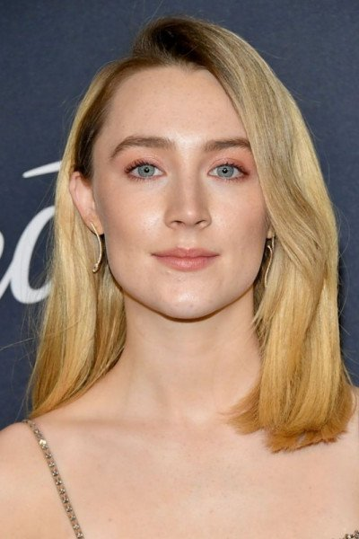

Си́рша У́на Ро́нан[1] (ирл. Saoirse Una Ronan, ˈsˠiːɾʲʃə ˈuːnˠə ˈɾˠɔn̪ˠən̪ˠ; также англ. ˈsɜrʃə ˈuːnə ˈroʊnən[2] — Се́рша или Сёрша У́на Ро́унан; род. 12 апреля 1994[3][4], Нью-Йорк, Нью-Йорк США) — ирландская актриса американского происхождения[5]. Лауреат премии «Золотой глобус» (2018) и Critics' Choice Award (2010), пятикратный номинант на премию BAFTA, четырёхкратный номинант на премию Американской Гильдии киноактёров и четырёхкратный номинант на премию «Оскар» — за роли в фильмах «Искупление» (2007), «Бруклин» (2015), «Леди Бёрд» (2017) и «Маленькие женщины» (2019).
